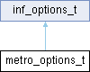

Loading...
Searching...
No Matches
metro_options_t Struct Reference
inf_options_t augmented with metropolis-specific arguments: More...
#include <base.hpp>
Inheritance diagram for metro_options_t:

Public Member Functions | |
| metro_options_t (size_t thin, size_t burn, size_t num_iterations, unsigned seed=2022) | |
Public Attributes | |
| size_t | _thin |
| size_t | _burn |
| size_t | _num_iterations |
| size_t | _n |
| unsigned | _seed |
 Public Attributes inherited from inf_options_t Public Attributes inherited from inf_options_t | |
| size_t | _num_iterations |
Detailed Description
inf_options_t augmented with metropolis-specific arguments:
thin: every thin-th sample is kept in the posterior... burn: ...after the burn-th sample seed: seeds the prng used for acceptance/rejection
The documentation for this struct was generated from the following file:
- lib/inference/metropolis/base.hpp